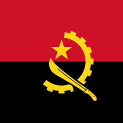
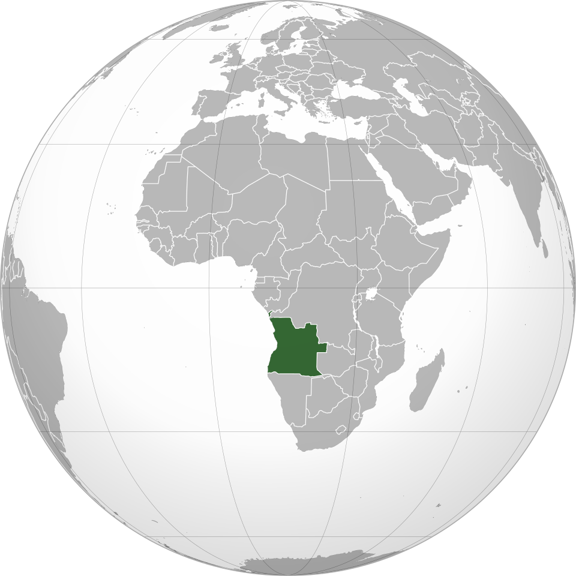

🎭 Cultura
A cultura angolana é formada por diferentes povos e tradições africanas. A música e a dança possuem grande importância, com estilos como o semba e o kuduro. As festas tradicionais também fazem parte da identidade cultural do país.


Angola é um país localizado na costa oeste da África. Possui uma grande diversidade cultural, paisagens naturais impressionantes e uma história marcada por diferentes povos e tradições.
A cultura angolana é formada por diferentes povos e tradições africanas. A música e a dança possuem grande importância, com estilos como o semba e o kuduro. As festas tradicionais também fazem parte da identidade cultural do país.
A culinária angolana utiliza ingredientes como mandioca, milho, feijão, peixe e diferentes tipos de carne. Entre os pratos tradicionais estão:
Angola possui uma das maiores quedas d'água da África: as Quedas de Kalandula, localizadas na província de Malanje. O país também possui uma extensa costa banhada pelo Oceano Atlântico.